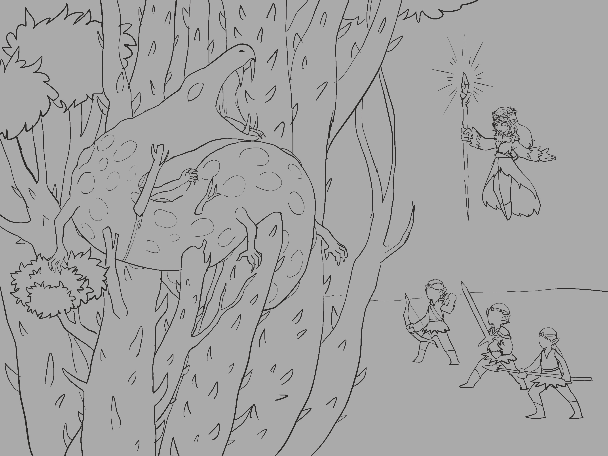

Chapter 5: The Champion of Nessis
Py'Par's Vision


Py'Par's Vision
15051.10.20
烏波協助把搬運來到常翠林總部的東西放好後，在總部內花了點時間探索。裡面的空間如他從外面所看到的形狀，一個巨大拱起的土丘，而裡面的房間，則都採圓形的設計。烏波順著牆壁走，看見門，便嘗試開啟。同一時間，從後門和弗雷多走回室內的巴斯，向弗雷多請求，希望能看看他們的夥伴，被安置在此的賽柏。弗雷多領著巴斯，來到中央會議室旁的一個房間，輕輕推開了門。
門內，微亮的室內，一座柔軟、舒服的床擺在房間的正中央，而躺在床上的，是雙手擺在胸前的強壯金髮半獸人，但他的眼睛是闔上的。巴斯趕到了床前。賽柏的狀況是穩定的，甚至發出了點聲響，但他並未甦醒。巴斯請弗雷多把烏波和羅特找來這裡。一進房內，羅特趕緊衝向臥躺在床上的賽柏。終於。巴斯請弗雷多先暫時離開，留給他們一點私人的空間。
烏波嘗試用他的草藥工具喚醒沉睡的賽柏，然而，他只聽到他的夢囈，喊著「巨蛇」之類的話語。不久後，門外傳來敲門聲。洛伐開了門，走了進來。在得到冒險者們的允許後，洛伐為賽柏做了些額外的診斷與處理。她說，賽柏需要很多額外的睡眠，就像小嬰兒一樣⋯⋯或是老人。冒險者們眼看賽柏暫時不會醒來，便暫時離開了房間，洛伐也跟隨其後。
走出房後，烏波感受到了一陣來自地面的震動。而在他提起這個狀況後，羅特和和巴斯也發現總部內的不少常翠林夥伴們衝到了關著的門口前，手上都備好了武器。羅特見狀也跑了過去。簡單詢問後，他得知，常翠林的妖精們確定門外肯定有威脅，而他們也猜測，很有可能是先前他們擊退的巨蛇。羅特將消息轉達給巴斯後，巴斯與烏波便也備好武器，來到門口。軍人出生的巴斯眼看大家都堵在門口，便竄到前面，把門撞開。
眼前，數倍高的巨蛇矗立在大家眼前，而在他身邊的，是四隻形態各異的蛇妖：是冒險者們先前與派琶和佛拉一同對戰過的蛇妖⋯⋯但這次一口氣就有四隻。冒險者們向前衝去，常翠林的妖精們也跟著衝鋒。
看見不久前還住在他包包內的小蛇，如今變成自己數倍高的巨蛇，羅特的心裡很複雜。他一開始就知道芒果是芬尼爾，或也許是芬諾爾的造物，在經歷母親大人的事件後，他對月神的信任感早已歸零。某種程度上，芒果是他的責任，而現在，他需要負責。
烏波變身成了火元素，在空曠的草地上來回燒著蛇妖，但蛇妖們似乎對此不太在意，在火光中繼續肆虐。巴斯認真砍著其中一隻蛇妖，試圖減少威脅的數量。羅特則因為四週太過空曠，沒有合適的隱藏之處，而難以發揮他的刺殺長處。
跛著腳的佛拉支援冒險者們，在危急時刻為他們治療。派琶則衝到芒果前，給予前線的夥伴們強大的幫助。
蛇妖們與芒果似乎鐵了心朝著派琶打，但派琶把所有的保護與治療都分給冒險者夥伴們與佛拉，自己承受一切傷害。直到他倒地。
關鍵時刻，一道綠色的身影與金色的光芒竄了出來。是賽柏。
冒險者們看見甦醒的賽柏，身上的裝束甚至和上次一起戰鬥時有了些微的變化：冒著綠色光芒的狼牙棒，以及帶著涅西斯祝福的鎧甲，賽柏看起來萬夫莫敵。賽柏趕到倒下的派琶身邊，為他承受了致命的傷害。派琶回頭，輕聲說了聲謝謝，然後繼續戰鬥。
縱使蛇妖們都受了些傷，芒果卻似乎安然無恙，血盆大口與粗壯的尾巴肆虐戰場，朝著天空的咆哮則讓戰場上的妖精們感到恐懼。派琶站穩身子，對著芒果施法。
冒險者們與歸來的賽柏分工合作，他們也注意到賽柏除了武器與鎧甲外，有了不少新的能力，讓他們在戰場上更加堅韌與強大。但隨著芒果與蛇妖的夾擊，派琶第二次倒地，烏波也身受重傷。
霎時間，一陣綠色的光芒從地上亮起，冒險者們眼看倒地的派琶漂浮在空中，雙手打開。
「巨蛇，我不能再讓你肆虐了。」那不是派琶的聲音。賽柏聽過這聲音。那是涅西斯的聲音。飄在空中的派琶舉起權杖，朝著芒果的方向一揮，地上長出了樹木，刺穿了芒果，將他困在其中。芒果大聲嘶叫，痛苦不堪。
接著，新生的樹枝與樹幹開始長出尖刺，刺在芒果身上。異樣的血跡灑下，冒險者們眼前的畫面淒慘而恐怖。冒險者們順勢攻擊，也終於將兩隻蛇妖打倒。然而，戰鬥中，幾名妖精也沒能抵擋芒果與蛇妖們的攻勢，幾番急救後回天乏術。
派琶繼續施咒，芒果身上與周圍的樹越長越高，越來越粗壯，最終，在賽柏的致命一擊下，芒果發出了最後一聲的淒厲嘶鳴。隨著他的死去，最終兩名蛇妖也消散在空中。
常翠林的妖精們收拾殘局，將倒地的夥伴們搬回總部內。冒險者們也稍作休息。羅特的心裡依然五味雜陳。
晚餐時間，派琶邀請冒險者們共上餐桌。弗雷多小心地喚了巴斯，兩人來到總部後門。「你們在戰鬥時，我得到了新的情報。」弗雷多露出沉重的表情。「你有位朋友，叫『派翠克』對吧？你們得去一趟石原鎮。派翠克⋯⋯他的遺體被挖走了。」
巴斯神情肅穆。對於派翠克之死，他已經很意外了，但屍體被挖走？這不僅意外，還讓人有些難以理解。弗雷多表示他知道怎麼從這裡到石原鎮，可以帶他們去。巴斯點點頭，表示他會和夥伴們說。回到餐桌，巴斯直接了當的說明，他有些私事需要處理，想邀請他的冒險夥伴們和他一起接下來的旅程。烏波點點頭，羅特也覺得大家互相幫忙了這麼久，這是小事。
終於歸來的賽柏看著大家。「很抱歉，但我想我在常翠林找到了我的歸屬。」賽柏看了看身邊的新朋友們。「派琶需要我，常翠林需要我，最重要的是，涅西斯需要我。」冒險者夥伴們點點頭，他們都看得出來，賽柏在這裡找到了平靜與目的，他不再是那個揮舞著狼牙棒，想著復仇的野蠻人，如今的他更像個傳達涅西斯理念的守護者，已經是可以依靠的肩膀。而比起他們，常翠林的妖精們更需要這雙肩膀。
15051.10.20
After Ubbo helped put away the supplies brought to the Evergreen headquarters, he spent some time exploring the interior. The space matched the shape he had seen from outside: a huge raised mound, while the rooms inside were all circular in design. Ubbo walked along the wall, and whenever he saw a door, he tried to open it. At the same time, Buzz returned indoors from the back door with Fre'Do and asked Fre'Do if he could see their companion, Psyber, who had been placed here. Fre'Do led Buzz to a room beside the central meeting chamber and gently pushed the door open.
Inside the dim room, a soft and comfortable bed stood in the center. Lying on it was a strong blond half-orc with his hands folded over his chest, but his eyes were closed. Buzz hurried to the bedside. Psyber's condition was stable, and he even made a faint sound, but he did not wake. Buzz asked Fre'Do to bring Ubbo and Lott here. As soon as Lott entered the room, he rushed toward Psyber lying on the bed. At last. Buzz asked Fre'Do to leave for a while and give them some private space.
Ubbo tried to wake the sleeping Psyber with his herbalism tools, but he only heard Psyber muttering in his sleep, saying things like "giant serpent." Not long after, there was a knock at the door. Loh'Va opened it and walked in. With the adventurers' permission, Loh'Va gave Psyber some additional diagnosis and treatment. She said Psyber needed a great deal of extra sleep, like a baby... or an old person. Seeing that Psyber would not wake for now, the adventurers left the room for the moment, and Loh'Va followed them out.
After leaving the room, Ubbo felt a tremor from the ground. Once he mentioned it, Lott and Buzz also noticed many Evergreen companions rushing to the closed entrance with weapons ready. Lott ran over as well. After a brief inquiry, he learned that the Evergreen elves were certain there was a threat outside, and they guessed it was most likely the giant serpent they had driven off before. After Lott passed the news to Buzz, Buzz and Ubbo readied their weapons and came to the entrance too. Seeing everyone crowded at the doorway, Buzz, born a soldier, slipped to the front and slammed the door open.
Before them stood a giant serpent several times taller than everyone, and beside it were four Lamia of different forms: the same kind of Lamia the adventurers had fought earlier alongside Py'Par and Phola... except this time there were four at once. The adventurers charged forward, and the Evergreen elves charged with them.
Seeing the small snake that had lived in his bag not long ago now transformed into a giant serpent many times his height left Lott with complicated feelings. From the beginning, he had known Mango was a creation of Phynoir, or perhaps Phyneal, and after the incident with the Mother, his trust in the God of Luna had already fallen to zero. In a sense, Mango was his responsibility, and now he had to take responsibility.
Ubbo transformed into a fire elemental and burned back and forth through the Lamiae across the open grass, but the Lamiae did not seem to care much and continued rampaging through the flames. Buzz focused on cutting down one of the Lamiae, trying to reduce the number of threats. Lott, however, found it hard to use his assassination strengths because the area was too open and had no good places to hide.
The limping Phola supported the adventurers, healing them at critical moments. Py'Par rushed to the front of Mango and gave powerful aid to the companions on the front line.
The Lamia and Mango seemed determined to attack Py'Par, but Py'Par gave all of her protection and healing to the adventuring companions and Phola, taking every injury himself. Until she fell.
At the critical moment, a green figure and golden light burst out. It was Psyber.
The adventurers saw the awakened Psyber, whose equipment had even changed slightly since the last time they fought together: a mace glowing with green light and armor blessed by Nessis. Psyber looked unstoppable. He reached the fallen Py'Par and took a fatal blow for her. Py'Par looked back, softly said thank you, and continued fighting.
Although the Lamia had taken some wounds, Mango seemed unharmed. His blood-red maw and thick tail ravaged the battlefield, while his roar toward the sky frightened the elves on the field. Py'Par steadied himself and cast a spell at Mango.
The adventurers and the returned Psyber worked together, and they noticed that beyond his weapon and armor, Psyber had gained many new abilities that made him tougher and stronger on the battlefield. But under the pincer attack of Mango and the Lamia, Py'Par fell a second time, and Ubbo was gravely wounded.
In an instant, green light rose from the ground. The adventurers saw the fallen Py'Par float into the air, her arms spread open.
"Giant serpent, I cannot let you rampage any longer." That was not Py'Par's voice. Psyber had heard that voice before. It was Nessis's voice. Floating in the air, Py'Par raised her staff and swept it toward Mango. Trees grew from the ground, pierced Mango, and trapped him among them. Mango hissed loudly in terrible pain.
Then the newly grown branches and trunks began to sprout thorns, piercing Mango's body. Strange blood spilled down, and the sight before the adventurers was miserable and horrifying. The adventurers pressed the attack and finally brought down two of the Lamiae. However, during the battle, several elves also failed to withstand Mango and the Lamiae' assault, and even after repeated emergency treatment, they could not be saved.
Py'Par continued casting. The trees on and around Mango grew taller and thicker, until at last, with Psyber's fatal strike, Mango let out one final shrill hiss. With his death, the last two Lamiae also dispersed into the air.
The Evergreen elves cleaned up the aftermath and carried their fallen companions back into the headquarters. The adventurers also took a short rest. Lott's heart was still filled with mixed feelings.
At dinner, Py'Par invited the adventurers to share the table. Fre'Do carefully called Buzz over, and the two went to the back door of the headquarters. "While you were fighting, I received new information." Fre'Do wore a heavy expression. "You have a friend named Patrick, correct? You need to go to Stonefield. Patrick... his body was dug up."
Buzz's expression turned solemn. Patrick's death had already surprised him, but the body being dug up? That was not only unexpected, but also difficult to understand. Fre'Do said he knew how to get from here to Stonefield and could take them there. Buzz nodded and said he would tell his companions. Back at the table, Buzz explained directly that he had some personal matters to handle and wanted to invite his adventuring companions to join him on the journey ahead. Ubbo nodded, and Lott also felt that after helping each other for so long, this was a small matter.
Psyber, finally returned, looked at everyone. "I'm sorry, but I think I have found where I belong in the Evergreen." Psyber looked at the new friends around him. "Py'Par needs me. The Evergreen needs me. Most importantly, Nessis needs me." The adventuring companions nodded. They could all see that Psyber had found peace and purpose here. He was no longer the barbarian swinging a mace and thinking of revenge. Now he was more like a guardian carrying Nessis's ideals, a shoulder others could rely on. And compared with them, the elves of the Evergreen needed that shoulder more.